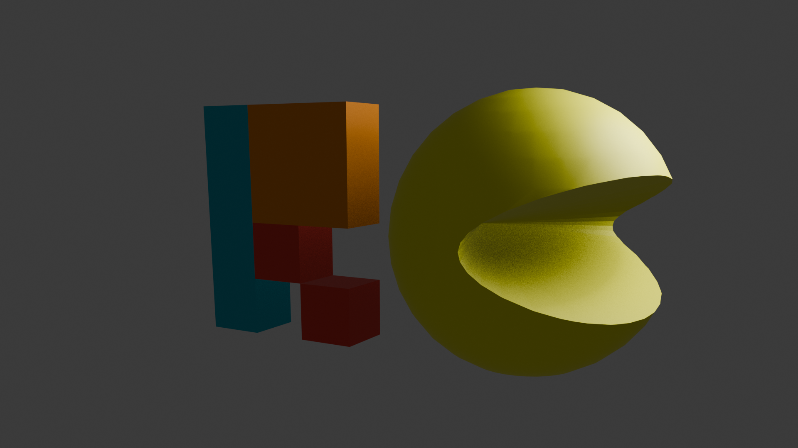

Classic Logo
This is our original pixel art logo, representing the retro spirit of our studio.

3D Logo
A modern 3D reinterpretation of our classic logo, blending old-school charm with new technology.
Animated Logo
Watch our logo come to life in this short animation, created to showcase our visual identity in motion.